Приехать на прогулку
С вторника по воскресенье, с 13:00 по 17:00, приют на Посадской, 3. Возьмите удобную обувь и хорошее настроение - поводок и компанию найдём.
Мы - совет «Движения Первых» школы №41. Гуляем с собаками приюта, привозим корм и ищем тех, кто заберёт друга домой. Здесь - настоящие анкеты собак, которым очень нужна семья.

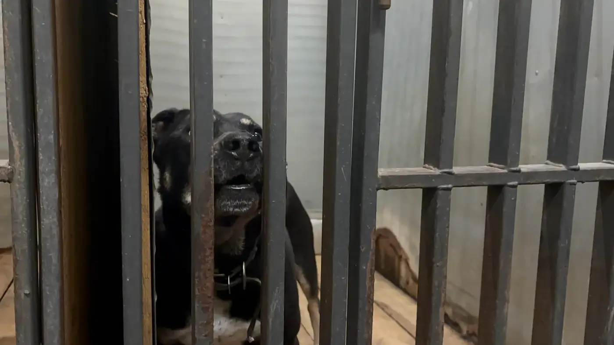
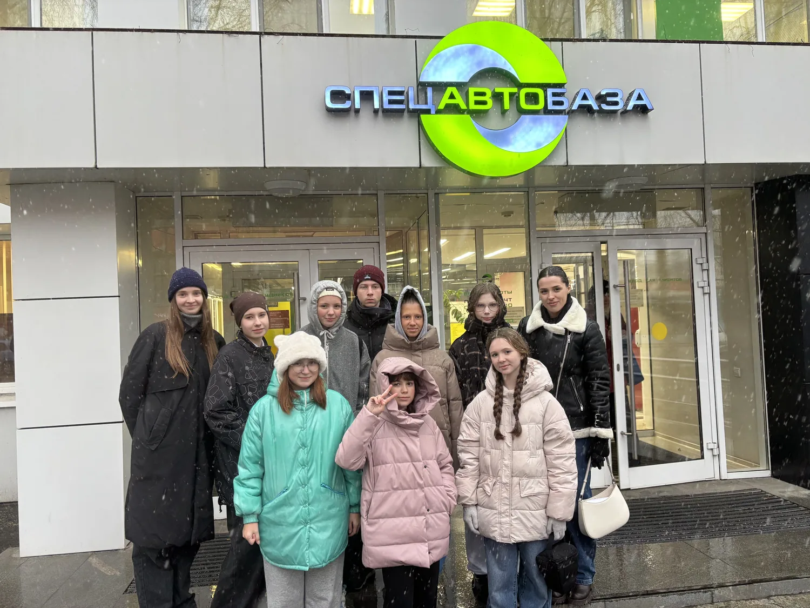
«Лапа помощи» - проект совета «Движения Первых» МАОУ СОШ №41. Раз в неделю периодически ездим в приют на Посадской, 3: выгуливаем собак и привозим корм.
Приют живёт помощью людей, а собакам не хватает главного - внимания и дома. Поэтому мы собираем анкеты, снимаем видео с прогулок и рассказываем о каждой собаке так, чтобы её заметили.
Никаких постановочных кадров - только прогулки, знакомства и хвосты.
«Уроки добра» - это занятия о милосердии и ответственном отношении к животным, которые старшеклассники проводят для младших школьников.
Каждый год в приюты попадают собаки, многие из которых пострадали от жестокого обращения - в том числе со стороны подростков. Мы уверены: доброте и ответственности нужно учить с детства. «Уроки добра» помогают младшим школьникам узнать о судьбах собак из приюта, понять, как важно сострадание, и получить конкретные знания о том, как можно помочь животным уже сейчас.
Занятия проводят старшеклассники-наставники - участники проекта «Лапа помощи» из Совета Движения Первых и волонтёрского отряда «Забота в действии» школы №41. Формат «равный - равному» вызывает у детей больше доверия, чем лекция взрослого: старшеклассники говорят с младшими на понятном языке и делятся собственным опытом помощи приюту.
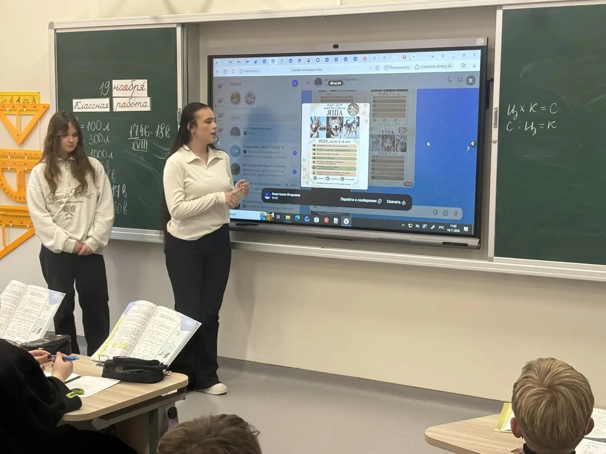
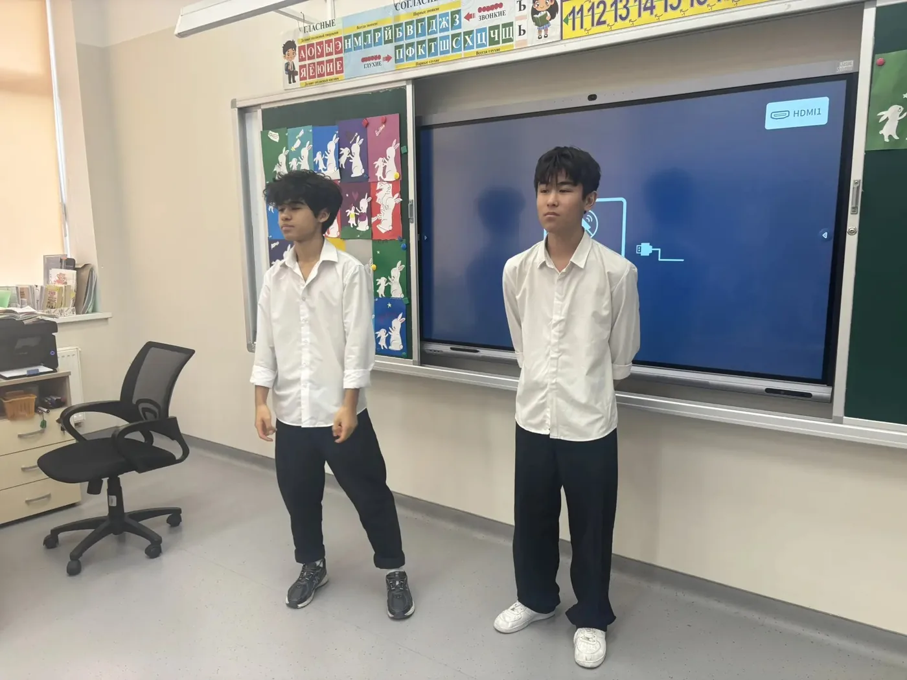
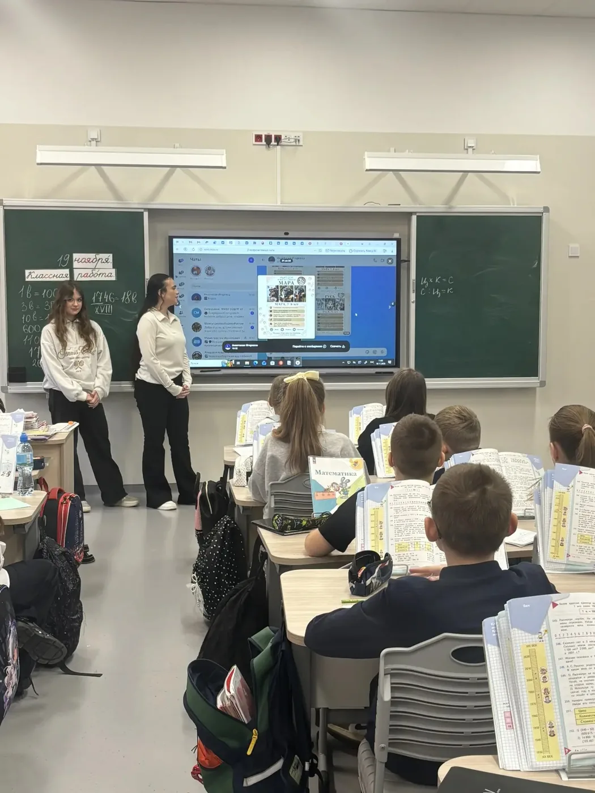
За первый месяц собрали 162 кг корма и 153 единицы непищевой помощи - пелёнки, игрушки, миски, пледы. Всё передали приюту на Посадской, 3.
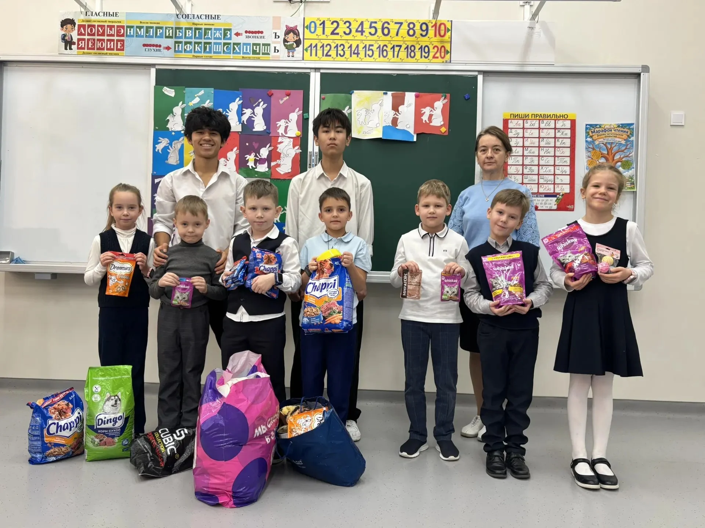
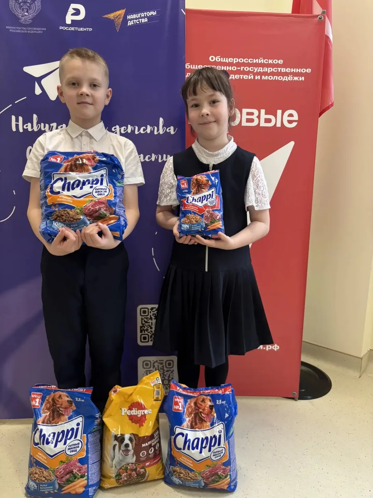
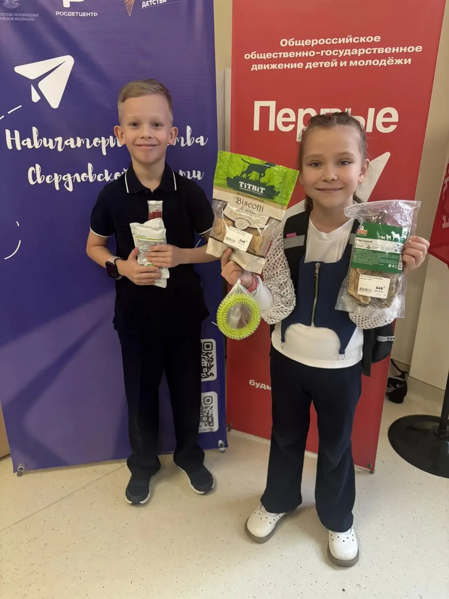
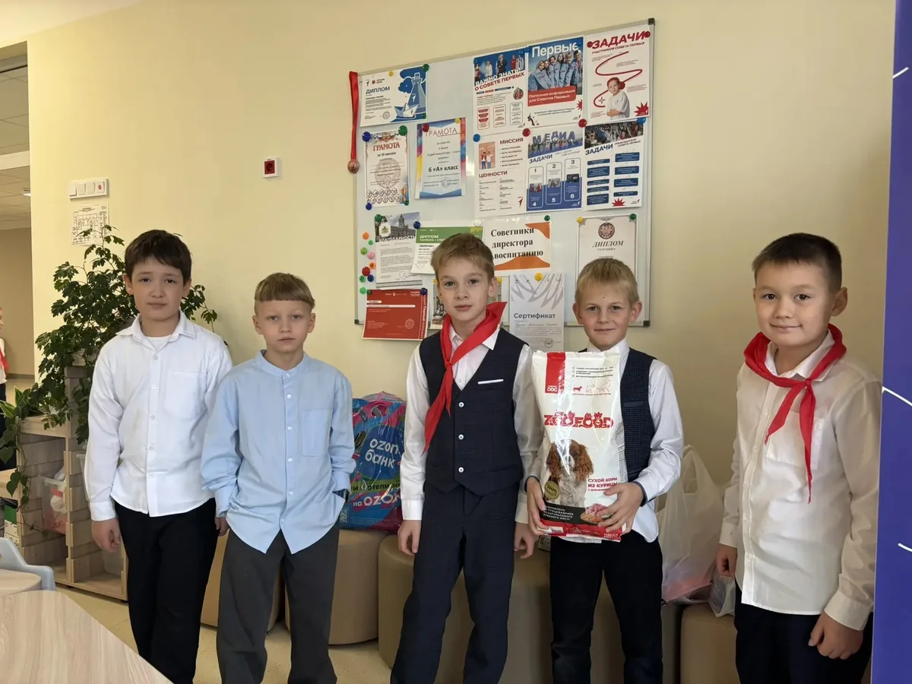
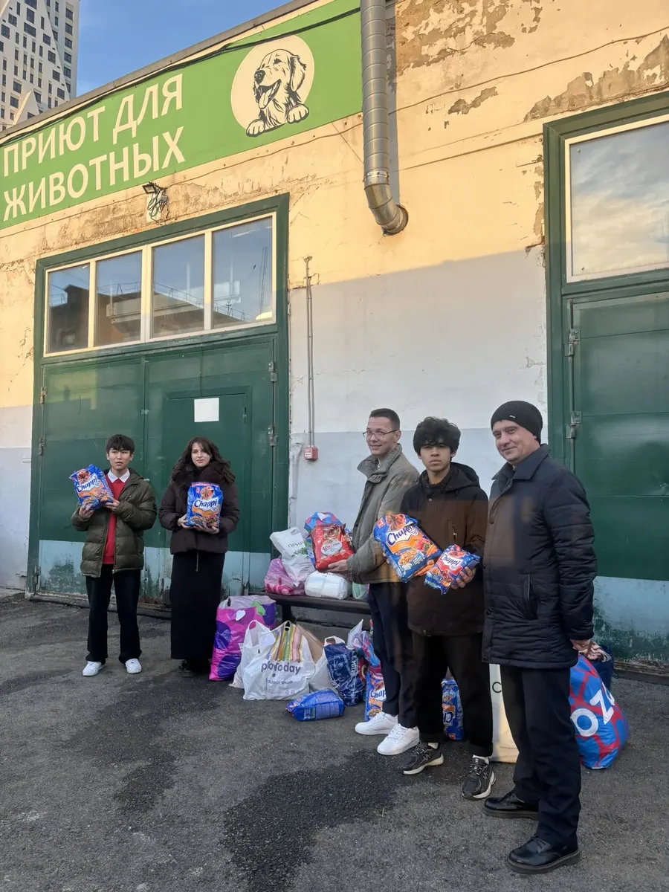
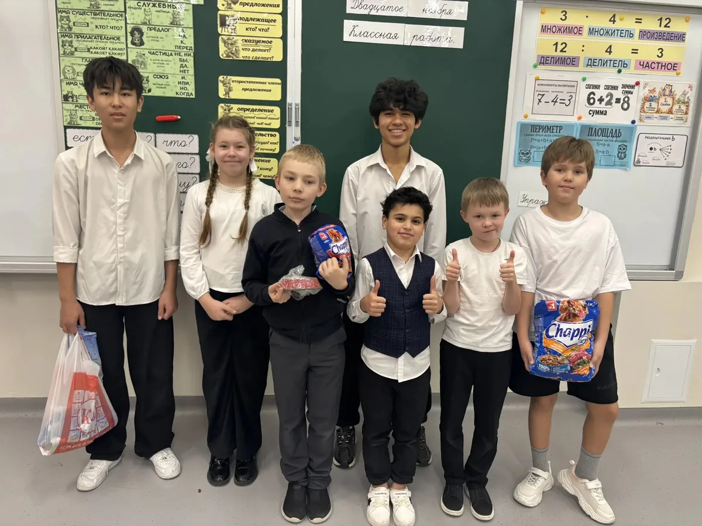
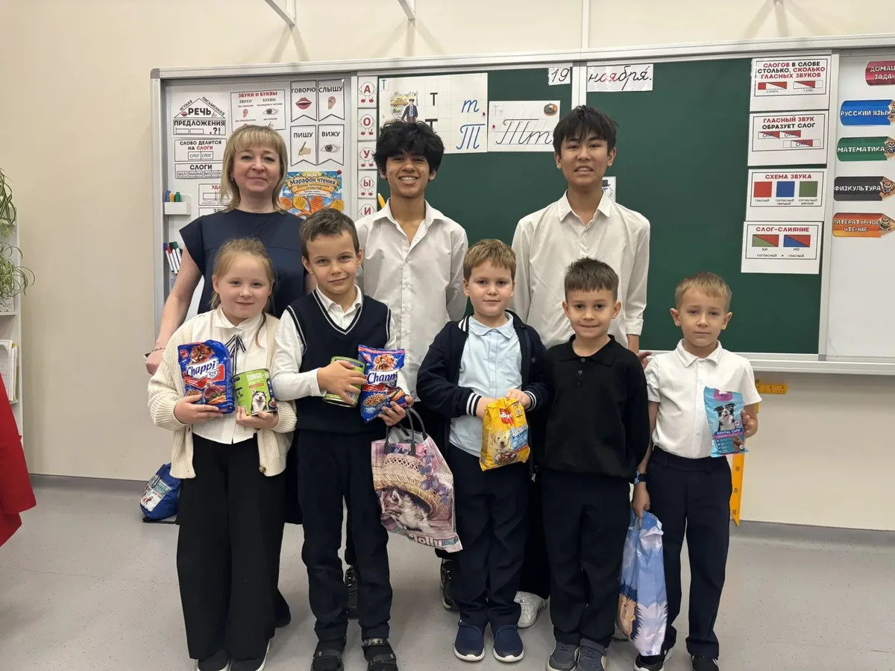
Каждая карточка - реальная собака из приюта. Можно приехать на прогулку и просто познакомиться, а можно сразу забрать друга домой.
С вторника по воскресенье, с 13:00 по 17:00, приют на Посадской, 3. Возьмите удобную обувь и хорошее настроение - поводок и компанию найдём.
Пачку сухого корма можно оставить в 41-й школе на вахте - мы сами отвезём её в приют в ближайшую поездку.
Отправьте ссылку на этот сайт друзьям и в чаты. Иногда самый быстрый путь к дому - одно сообщение близкому человеку.
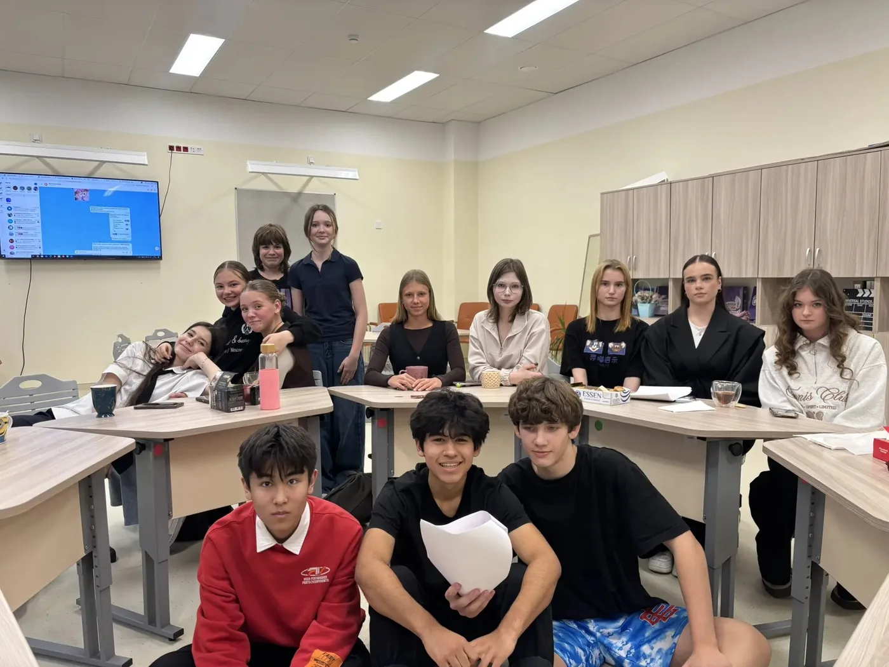
Проект делают ученики школы №41: собирают корм, ездят в приют на Посадской, 3, проводят «Уроки добра» для младших классов и ведут этот сайт.
Руководители проекта - Гудина Анастасия Игоревна и Шамсутдинова Карина Рустамовна.
Да. До 14 лет - вместе со взрослым, с 14 до 18 - можно с письменным согласием родителей.
Удобную обувь, одежду, которую не жалко испачкать. Поводки и намордники у нас есть.
Кормом, амуницией или поделиться ссылкой на сайт. Даже одна прогулка в неделю - это уже большая поддержка.
Сначала прогулка на территории приюта, потом - встреча на нейтральной территории. Домой собака уезжает только после спокойного знакомства и договорённости с куратором.
Да, все собаки в анкетах привиты и обработаны, большинство стерилизованы. Точный статус указан в карточке каждой собаки.
Если у вас есть идеи, как сделать сайт удобнее, или заметили неточность - напишите нам в Telegram @kovarch. Сайт сделан участниками проекта «Лапа помощи» совета Первых школы №41.